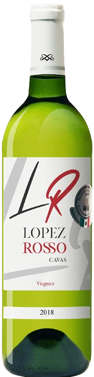

Lopez Rosso Cavas
Tipo: Vino Blanco
Origen: Zacatecas, México.
Viñedo: Suelo franco arenoso y arcilloso.
Aroma: Frutal - Manzana verde, toronja, pera y piña.
Temperatura: Se recomienda entre 9° y 11° C.
Gusto:
Dulzor 3/5
Acidez 4/5
Cuerpo 4/5
Alcohol 3/5Tipo: Vino Blanco